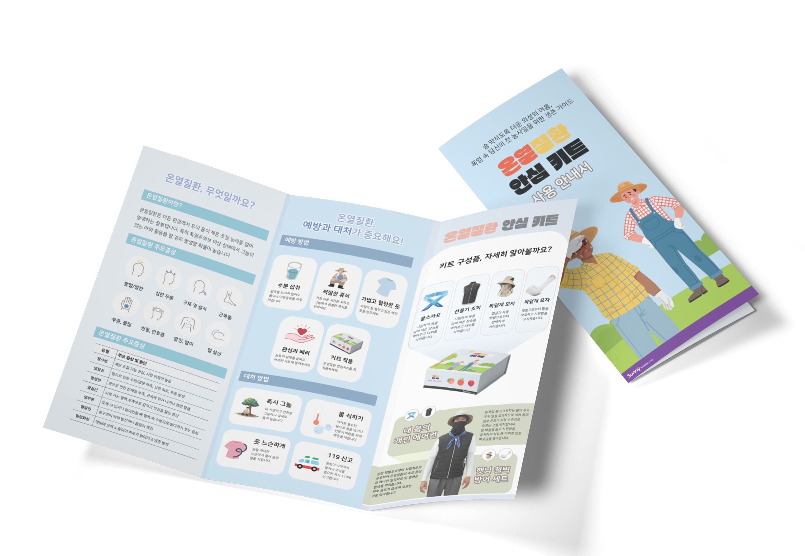
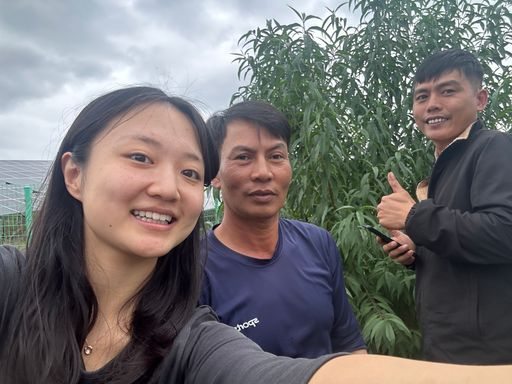

SUNNY SCHOLAR in 의성 · 팀 헷사과
그늘 없는 밭에서,
통계에 없는 사고
2025년 7월 경북의 한 고추밭. 태국 출신 60대 노동자가 열성 쇼크로 쓰러졌다. 그 사고는 어떤 통계에도 잡히지 않았다.
SCROLL ↓
그늘조차 없는 노지에서 장시간 일하던 태국 출신 60대 노동자 A씨가 열성 쇼크로 쓰러졌다. 응급실로 옮겨졌지만 언어 기능에 심각한 후유증이 남았다. 이 사고는 정부의 온열질환 통계에 집계되지 않았다. 헷사과 팀이 현장에서 만난 이주노동자단체의 증언과 극소수 기사로만 확인할 수 있었던, 공론화되지 않은 사고다.
이주노동자의 고통은 '죽음'에 이르러서야 잠깐 언론에 다뤄진다. 그사이 폭염은 해마다 기세를 더한다. 2026년은 5월부터 이례적인 더위가 시작돼, 연중 가장 이른 시점에 온열질환 사망자가 나왔다.
가혹한 날씨와 가장 열악한 환경에서 묵묵히 일하는 이주노동자가 없다면, 농촌은 하루도 돌아가지 못한다. 그런데도 이들은 폭염 앞에 가장 먼저, 가장 깊이 노출된다.
문헌도 통계도 거의 없었다. 부검에서도 작업 환경·노동 강도·폭염 노출 시간이 사인에 충분히 반영되지 않아, 온열질환 통계에 잡히지 않기 때문이다. 그래서 2025년 8월 30일부터 9월 15일까지 의성읍·점곡면·옥산면·안동 일대에서 이주노동자 31명과 관계자 15명을 직접 만났다.
"일하던 중 얼굴이 창백해지고 몸이 덜덜 떨렸어요. 정신을 잃지 않으려고 마시던 냉수를 머리에 들이부으면서 버텼습니다."
"머리는 너무 어지럽고 눈앞이 흐린데, 어떻게 해야 할지 몰라 손쓸 수 없었습니다."

"외국인들은 원래 우리보다 더위를 훨씬 잘 견딘다니까요?"
"농사는 원래 여름에 하는 건데, 그렇게 따지면 어떻게 해요."
"복장이나 더위 대응까지 안내하는 건 현실적으로 안 돼요. 기본 안내 항목에도 없어요."
"어느 현장 갈지 매일 바뀌는데, 안전교육까지 하기 어려워요."
"더워서 어지러웠던 적이 많아요. 그런데 병원에 가거나 하루 일을 빼는 건 불가능해요."
"쉬자고 먼저 말할 수 없거든요."
"드론까지 띄워 농민을 대피시켜요. 하지만 이주노동자에겐 가닿기 어려워요. 사적 계약이라 개입에 한계가 있어요."
"힘들 텐데, 해드릴 수 있는 게 없습니다."
농장주들 사이에는 이주노동자가 '더위에 무감할 것'이라는 왜곡된 인식이 팽배했다. 출신 국가가 한국보다 덥다는 이유였지만, 출신과 무관하게 이들은 폭염에 그대로 노출돼 있었다.
중개 현장에서는 인력 배치와 일정 조율이 최우선이었고, 안전 교육은 늘 후순위였다. 인력업체에 폭염은 멈춰야 할 위험이라기보다 감수해야 하는 환경이었다.
정작 증상을 느끼는 노동자들은 아무 대처도 하지 못했다. 위험 신호인 줄 몰랐던 경우도 많았지만, 신분과 고용 관계의 취약함 때문에 스스로 작업을 멈추거나 휴식을 요구하는 것 자체가 어려웠다.
지자체는 문제를 어렴풋이 알았지만 손쓸 길이 없었다. 농가와의 사적 계약, 비자 문제로 행정의 개입에는 한계가 있었고, '활동 자제 권유'라는 지침만 반복됐다. 현장의 모든 주체가 위험을 묵인하는 사이, 보호해야 할 공공기관마저 비켜서 있었다.
이주노동자는 고용허가제(E-9), 계절근로(C-4·E-8), 관광비자(C-3) 등 서로 다른 경로로 농촌에 들어온다. 그런데 현장에서는 그 경계가 쉽게 무너진다. 사업장을 이탈한 E-9 인력, 기한을 넘긴 관광비자 인력이 한 밭에서 섞여 일한다. 그 결과 거대한 '미등록' 노동 풀이 고착됐다.
| 현장에서 만난 사례 | 비자 · 체류 |
|---|---|
| 인도네시아 20대 남성 3명 | 관광비자 단기 입국 — 고향 친구 소개로 |
| 베트남 남성 10여 명 | 고용허가제 입국 후 기한 만료, 불법체류 |
| 캄보디아 여성 15여 명 | 계절근로제 단기 입국 |
| 베트남 30대 남성 10여 명 | 관광비자 단기 입국 |
미등록 이주노동자에 의지하는 비율 (한국농촌경제연구원). 불법 취업 규모는 전년 대비 42.3% 늘어 30만 명을 넘어섰다.
미등록 신분은 침묵을 낳는다. 그 침묵은 세 겹이다.
폭염으로 건강이 나빠진 한 베트남 노동자는 농장주의 치료비 자부담 요구를 견디지 못해 중도 귀국했다. 고국에서 보험금을 청구했지만 '해외 노동 중 발생한 질환'이라는 이유로 거절당했다. 국내에서도 국외에서도 구제받지 못했다.
| 안전교육 단계 | 제도 | 현장 |
|---|---|---|
| 입국 전(송출국) | 45시간 이상 — 기초 한국어·산업안전 | 실무 용어와 괴리, 형식적 이수 |
| 입국 직후 | 16시간(2박3일) — 산업안전보건·노동권리 | 무단 이탈 방지 경고에 편중, 폭염 수칙 미흡 |
현장에서라도 교육하면 되지만, 농촌에서는 그마저 어렵다. 이유는 세 가지다.
| 항목 | 🏗️ 건설업 | 🧑🌾 농촌 |
|---|---|---|
| 법적 근거 | 산업안전보건기준 개정(2025.7.17) — 법적 의무 | 여름철 종합대책 — 권고 수준 |
| 휴게 공간 | 냉방·환기 그늘막 설치 의무 | 나무 그늘 등 간이 휴식 |
| 적용 범위 | 위반 시 처벌 | 5인 미만 영세농 제외 |
제도의 격차는 현장을 양극화한다. 공사 기한을 조율할 수 있는 건설업과 달리, 농업은 작물의 생육 주기와 날씨에 매여 폭염 속에서도 작업을 강행한다. 그 위험을 통제할 법적 강제성은 없고, 현장의 다수인 5인 미만 영세농은 기본 안전 관리망에서조차 빠진다.
굳게 닫힌 법과 의료 시스템을 하루아침에 바꿀 수는 없다. 그렇다면 지금 당장 현장에 쥐여줄 수 있는 가장 빠른 방패는 무엇일까. 헷사과는 그 답을 노동자의 체온과 직결되는 '복장 표준'에서 찾았다. 명확한 기준이 없어, 잘못된 복장이 오히려 위험을 키우고 있었기 때문이다.
아무런 공적 보호도 받지 못하는 현장에서, 이들이 찜통더위를 버틸 유일한 생명줄은 본인이 걸친 옷뿐이다. 그런데 명확한 복장 기준이 없다 보니, 잘못된 옷차림이 오히려 온열질환 위험을 키우고 있었다.
헷사과는 기능성·접근성·직관성 세 기준으로 필수 보호물품을 골라, 일터에 도착하자마자 고민 없이 입을 수 있도록 하나의 패키지로 묶었다. 거대한 제도의 공백을 단숨에 메울 수 없다면, 이 가혹한 복장 환경부터 바꾸는 것이 가장 빠르고 확실한 출발점이라고 봤다.

* 키트는 4종 보호물품으로 구성된다. 원문에 명칭이 밝혀진 것은 "내 몸의 개인 에어컨", "햇님 철벽 방어 세트" 두 가지이며, 나머지는 기능 기준으로 표기했다.
한국어가 익숙하지 않은 노동자도 핵심 정보를 이해할 수 있도록, 안심키트에는 총 10개 언어로 만든 다국어 리플렛이 들어간다.

* 원문에는 "10개 언어"만 명시돼 있어, 현장에서 만난 노동자의 국적을 기준으로 일부만 표기했다.
하나의 작은 움직임이 사회의 큰 물결을 부를 수 있다. 이때 온열질환을 개인의 부주의가 아니라 사회적 무관심과 미비한 제도가 함께 만든 결과로 봐야 한다.
"이주노동자 문제는 팔, 다리가 잘려야만 뉴스에 나와요."
2025년 6월부터 11월, 네 명의 대학생이 모인 헷사과 팀은 무더운 여름부터 선선한 가을까지 의성 농업 현장을 발로 뛰었다. 당사자와 동료, 농장주, 지원기관, 인력업체, 의성군청을 만나 묻혀 있던 목소리를 들었다. 지나가듯 들은 소장의 한 마디가 더 깊은 연구의 출발점이 됐다.
의성에서 만난 이주노동자들은 온열질환을 자주 겪으면서도 누구의 도움도 받지 못했다. 그 고통이 단순한 건강 문제를 넘어 사각지대에 놓인 이들의 숨겨진 어려움임을 알게 됐다. 헷사과는 이 기록이 문제 정의에 머물지 않고, 사회적 관심과 변화를 이끄는 작은 첫걸음이 되기를 바란다. 함께 살아가지만 소외된 곳에도 온기가 닿기를.

함께하면 농촌 이주노동자의 온열질환은 개인이 버틸 일이 아니라, 같이 메울 사각지대가 된다. 헷사과는 1년간 의성에서 모은 데이터와 안심키트를 공유한다.